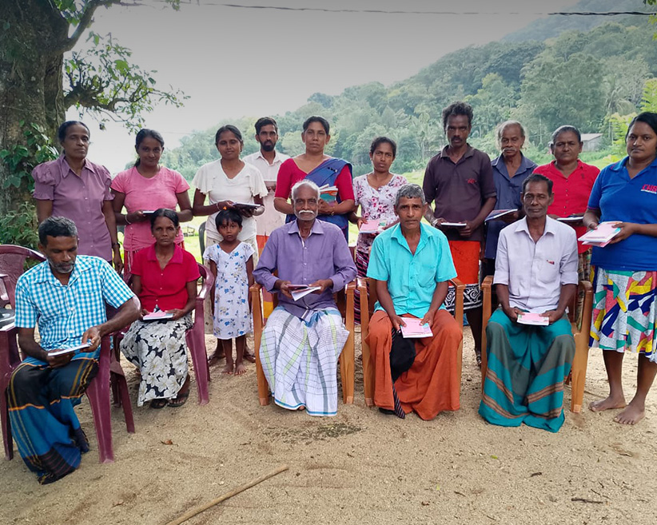

Practical community support
Support that starts with people and stays in communities
CDC works alongside rural communities in Sri Lanka through training, guidance, and hands-on collaboration — building lasting skills and strengthening livelihoods from the ground up.
Talk to CDCWhat we offer
Support that meets communities where they are
CDC's support is not a fixed menu. It grows from years of fieldwork, listening to communities, and responding to what is genuinely needed on the ground.
-
Learning & Training
Training in agriculture, organic farming, entrepreneurship, and livelihood skills — designed so communities can apply learning in their own context, at their own pace.
-
Community Leadership
Supporting communities to organize, participate, and take collective action — building local leaders and strong community structures that can sustain themselves.
-
Sustainable Livelihoods
Building income pathways through value addition, product processing, extension services, and local enterprise — connected to farming, food, and community production.
-
Agriculture & Environment
Organic farming guidance, seedling provision, and practical conservation work — supporting communities to care well for the land they live and work on.
-
Research & Knowledge Support
Supporting field research, educational visits, and knowledge exchange — bridging practical community experience with wider learning and documentation.
How it works
From first conversation to lasting community action
Listening to communities
We begin by spending time in the field — understanding local priorities, existing knowledge, and what meaningful support actually looks like in practice.
Building skills and awareness
Training, workshops, and field sessions that strengthen practical capabilities and raise awareness around farming, environment, and community enterprise.
Supporting action on the ground
Hands-on guidance, materials, and practical resources as communities put learning into real use — in fields, homes, and local enterprises.
Strengthening local capacity
Long-term relationships that help communities lead their own development — so support becomes embedded in local knowledge rather than dependent on outside help.
Who we walk alongside
Support built on relationships, not transactions
CDC does not deliver services from a distance. The people at the centre of this work are the ones who shape it. Farming families, women's groups, local producers, and community leaders are not recipients — they are the reason for it.
Support also reaches youth, local institutions, and researchers who want to understand or engage with community-based development in Sri Lanka.
- Rural communities
- Women's groups
- Farming families
- Local producers
- Youth
- Schools & institutions
- Researchers & partners


A closer look
Training and empowerment run through everything CDC does
Two of CDC's most consistent areas of work are training and women's empowerment — not as separate programs, but as connected threads running through most of what the organization does in the field.
- -> Skills training in agriculture, enterprise, and safe food production
- -> Women's groups supported through leadership and livelihood programs
- -> Practical fieldwork that connects learning directly to daily life and real income
Get in touch
Interested in working with CDC?
Whether you are a community group, a researcher, an organization, or someone who simply wants to understand more about this work — CDC is open to conversation.
Contact CDC